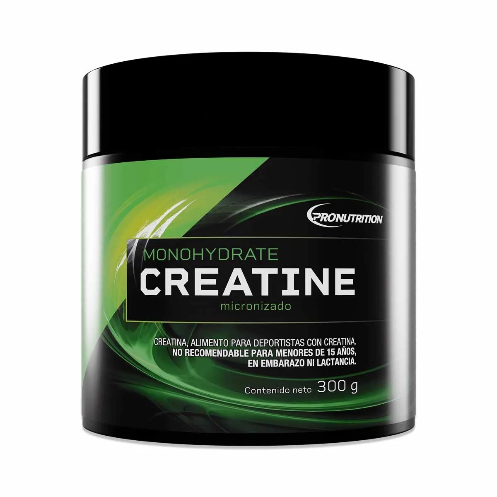

¿Cuándo tomar creatina? Mitos y realidades

Uno de los mitos mas repetidos en el gimnasio es que la creatina solo sirve si se toma inmediatamente despues de entrenar, o que hay que mezclarla con jugo o algo azucarado para que "se absorba mejor". La verdad es mas simple de lo que parece.
Lo que realmente importa con la creatina es la constancia diaria, no el minuto exacto en que se toma. El cuerpo va saturando los musculos con el uso diario, asi que tomarla en la mañana, en la tarde o despues de entrenar no genera una diferencia real en los resultados a largo plazo.
Existe tambien la llamada "fase de carga", que consiste en tomar una dosis mas alta los primeros dias para saturar mas rapido los musculos. Es opcional: se puede empezar directo con la dosis normal de mantencion y los resultados llegan igual, solo un poco mas lento.
La recomendacion practica es simple: elige un momento del dia que puedas mantener todos los dias, tomala con agua, y no te preocupes por mezclarla con algo dulce ni por hacerlo justo despues de entrenar.